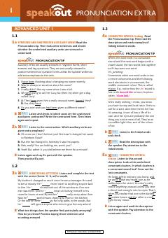

SAIngliz tili talaffuzini ilg'or darajada rivojlantirish uchun mo'ljallangan amaliy qo'llanma.
Speakout Advanced 2nd Edition Pronunciation Extra kitobi talabalarga ingliz tilida talaffuzni yaxshilash, urg'u va ohang qoidalarini amalda qo'llash uchun mo'ljallangan qo'llanma hisoblanadi. Unda turli birliklar bo'yicha maxsus mashqlar va audiolarga oid topshiriqlar keltirilgan.